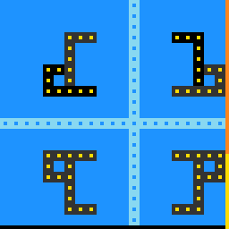

ar25
Select an object or separator band, push it, and cover every yellow target block with an object or its image.
8 levels · 8 rules · all levels replayed in Lean
Replay
The certified run that cleared every level, one action at a time.

Press Play or step to load the run. Keys, while the player is on screen: ← → step, Space play / pause. A click is circled; cells that changed are outlined.
How it plays
The screen has black objects, light-blue separator bands (whole rows or whole columns) and yellow target blocks; the dark grey ones are the mirror images of the objects. First click once to select an object or a separator band, then use the arrow keys to push it one cell. The separator bands are mirrors: each object has an image with respect to each band, and when an object is pushed the image moves along with it, when a band is pushed the mirror moves one cell and the image moves two cells; when one horizontal and one vertical band cross, there is also one more image, rotated half a turn about the intersection. The level is cleared when every yellow target block is covered by an object or by its image. A band drawn solid cannot be pushed; pushing it off the board, or against another object, cannot be pushed either; images that land off the board are not drawn. There is also a key that makes the selected one step back one step.

Model
The final model: 6 object types and 8 rules. Each rule is a Python check against every recorded step; 5 of them are translated into Lean (the paper's per-game table). Code under a rule is the file of the same name in the agent's Lean project.
Object types
- Target blocks
targetsYellow blocks; all must be covered to clear the level.Lean · World.lean
-- Board.targets : Nat structure Board where targets : Nat frozen : List Line deriving DecidableEq, BEq, Repr - Separator bands
bandsLight-blue whole rows or whole columns that act as mirrors.Lean · Band.lean
-- World.bands : List Band structure Band where line : Line deriving DecidableEq, BEq, Repr - Solid bands
frozenThe bands drawn solid, which cannot be pushed.Lean · Line.lean
-- Board.frozen : List Line structure Line where horiz : Bool k : Nat deriving DecidableEq, BEq, Repr - Objects
piecesBlack shapes that move as a whole when pushed.Lean · Piece.lean
-- World.pieces : List Piece structure Piece where cells : List Cell deriving DecidableEq, BEq, Repr - Selection
selWhich object or band is selected right now.Lean · World.lean
-- World.sel : Nat structure World where bands : List Band pieces : List Piece sel : Nat used : Nat deriving DecidableEq, BEq, Repr - Counter band
usedThe rightmost column, which records how many pushes this level has used.Lean · World.lean
-- World.used : Nat structure World where bands : List Band pieces : List Piece sel : Nat used : Nat deriving DecidableEq, BEq, Repr
Rules
push_moves_selectedAn arrow key moves the selected object or band one cell; nothing else moves.Python
from __future__ import annotations from derive.move import is_push, moved from rule._common import level_changed, same … … … HISTORY = [ … … … ] def scope_(w, action, nw, ctx): if not is_push(action): … if level_changed(ctx): … m = moved(w, action) return m if isinstance(m, str) else None def assert_(w, action, nw, ctx): return same(nw, moved(w, action))Lean · PushMovesSelected.lean
import Obj.World namespace Game inductive Dir | up | down | left | right deriving DecidableEq, BEq, Repr def stepCell : Dir → Cell → Option Cell | .up, x => if rowOf x ≥ 1 then some (x - STRIDE) else none | .down, x => if rowOf x + 1 < NB then some (x + STRIDE) else none | .left, x => if colOf x ≥ 1 then some (x - 1) else none | .right, x => if colOf x + 1 < NB then some (x + 1) else none def stepCells (d : Dir) : List Cell → Option (List Cell) | [] => some [] | x :: xs => match stepCell d x, stepCells d xs with | some y, some ys => some (y :: ys) | _, _ => none def stepLine : Dir → Line → Option Line | .up, l => if l.horiz ∧ l.k ≥ 1 then some { l with k := l.k - 1 } else none | .down, l => if l.horiz ∧ l.k + 1 < NB then some { l with k := l.k + 1 } else none | .left, l => if !l.horiz ∧ l.k ≥ 1 then some { l with k := l.k - 1 } else none | .right, l => if !l.horiz ∧ l.k + 1 < NB then some { l with k := l.k + 1 } else none def pushBand (b : Board) (w : World) (i : Nat) (d : Dir) : Option World := match w.bands[i]? with | none => none | some x => if b.frozen.contains x.line then none else match stepLine d x.line with | none => none | some l' => if w.bands.any (fun y => y.line == l') then none else some { w with bands := w.bands.set i { line := l' } } def pushPiece (w : World) (j : Nat) (d : Dir) : Option World := match w.pieces[j]? with | none => none | some p => match stepCells d p.cells with | none => none | some cs => let others := minusMask w.body p.mask if maskOf cs &&& others != 0 then none else some { w with pieces := w.pieces.set j { cells := cs } } def push (b : Board) (w : World) (d : Dir) : Option World := if w.sel < w.bands.length then pushBand b w w.sel d else pushPiece w (w.sel - w.bands.length) d end Gameclick_selectsA click selects the topmost object or band at that cell; nothing else changes.Python
from __future__ import annotations from dataclasses import replace from derive.click import clicked from derive.move import base from rule._common import level_changed, same … … HISTORY = [ … … ] def scope_(w, action, nw, ctx): if base(action) != "ACTION6": … if level_changed(ctx): … k = clicked(w, action) return k if isinstance(k, str) else None def assert_(w, action, nw, ctx): return same(nw, replace(w, sel=clicked(w, action)))Lean · ClickSelects.lean
import Obj.Derive.BandCells import Obj.Derive.Ghosts namespace Game def PX : Nat := 3 def firstIx {α} (p : α → Bool) : List α → Nat → Option Nat | [], _ => none | a :: as, i => if p a then some i else firstIx p as (i + 1) def clickedIx (b : Board) (w : World) (x y : Nat) : Option Nat := if y / PX ≥ NB ∨ x / PX ≥ NB then none else match firstIx (fun p => memMask p.mask (cellAt (y / PX) (x / PX))) w.pieces 0 with | some j => some (w.bands.length + j) | none => match ghostMask w with | none => none | some g => if memMask g (cellAt (y / PX) (x / PX)) then none else match w.bands.filter (fun z => memMask (bandMask b z) (cellAt (y / PX) (x / PX))) with | [z] => firstIx (fun u => u == z) w.bands 0 | _ => none def click (b : Board) (w : World) (x y : Nat) : Option World := match clickedIx b w x y with | some i => some { w with sel := i } | none => none end Gamepush_costs_oneEach successful push fills one more cell of the counter band.Python
from __future__ import annotations from derive.move import is_push, moved from rule._common import level_changed … … HISTORY = [ … … … … ] def scope_(w, action, nw, ctx): if not is_push(action): … if level_changed(ctx): … m = moved(w, action) return m if isinstance(m, str) else None def assert_(w, action, nw, ctx): return nw.used == w.used + 1Lean · PushCostsOne.lean
import Obj.World namespace Game def BUDGET : Nat := 64 def canSpend (w : World) : Bool := w.used < BUDGET def spend (w : World) : World := { w with used := w.used + 1 } end Gameclick_is_freeA click leaves the counter band unchanged; this follows from the click rule.Python
from __future__ import annotations from derive.move import base from rule._common import level_changed … HISTORY = [ … … ] def scope_(w, action, nw, ctx): if base(action) != "ACTION6": … if level_changed(ctx): … return None def assert_(w, action, nw, ctx): return nw.used == w.usedLean · ClickIsFree.lean
import Step import Obj.World theorem Game.click_is_free (b : Board) (w w' : World) (x y : Nat) (h : step b w (.click x y) = .ok w') : w'.used = w.used ∧ w'.bands = w.bands ∧ w'.pieces = w.pieces := by simp only [step] at h cases hc : click b w x y with | none => simp [hc] at h | some w'' => simp only [hc, Res.ok.injEq] at h subst h simp only [click] at hc cases hi : clickedIx b w x y with | none => simp [hi] at hc | some i => simp only [hi, Option.some.injEq] at hc subst hc exact ⟨rfl, rfl, rfl⟩level_clearThe level advances exactly when all target blocks are covered by objects or images.Python
from __future__ import annotations from derive.cover import covers_all from derive.move import is_push, moved … … NEEDS_NEXT = False def scope_(w, action, nw, ctx): if not is_push(action): … if not ctx or ctx.get("level_prev") is None or ctx.get("level_next") is None: … m = moved(w, action) if isinstance(m, str): return m if covers_all(m) is None: … return None def assert_(w, action, nw, ctx): return covers_all(moved(w, action)) == (ctx["level_prev"] != ctx["level_next"])Lean · LevelClear.lean
import Obj.Derive.Ghosts namespace Game def isGoal (b : Board) (w : World) : Bool := match ghostMask w with | some g => b.targets != 0 && subMask b.targets (w.body ||| g) | none => false end Gameact5_inertACTION5 changes nothing: objects, bands and selection stay as they are.Python onlyPython
from __future__ import annotations from derive.move import base from rule._common import level_changed, same … … … def scope_(w, action, nw, ctx): if base(action) != "ACTION5": … if level_changed(ctx): … return None def assert_(w, action, nw, ctx): return same(w, nw)act7_undo_stepACTION7 moves the selected object or band back one step, decided by earlier actions.Python onlyPython
from __future__ import annotations from derive.move import base, moved from rule._common import level_changed, same … … … def scope_(w, action, nw, ctx): if base(action) != "ACTION7": … if level_changed(ctx): … return None def assert_(w, action, nw, ctx): if same(w, nw): return True for a in ("ACTION1", "ACTION2", "ACTION3", "ACTION4"): m = moved(w, a) if not isinstance(m, str) and same(nw, m): return True return Falseblocked_push_freeA blocked push changes neither the board nor the counter band.Python onlyPython
from __future__ import annotations from derive.move import is_push, moved from rule._common import level_changed, same … … … def scope_(w, action, nw, ctx): if not is_push(action): … if level_changed(ctx): … m = moved(w, action) … def assert_(w, action, nw, ctx): return same(w, nw) and nw.used == w.used
Code is shown with comments and the agent's notes removed; the files as written are in the archive under Check it yourself.
Proof
For every level, Lean starts from the level's first screen, applies the model's rules to the certified actions, and checks that every computed state agrees with the recorded frame on the components the model represents, and that the last one wins. Each theorem is closed by the Lean kernel and is a statement about the learned model.
Every level can be won
theorem Game.Levels.L0_winnable : Winnable L0_board (L0_start : World) := …theorem Game.Levels.L1_winnable : Winnable L1_board (L1_start : World) := …theorem Game.Levels.L2_winnable : Winnable L2_board (L2_start : World) := …theorem Game.Levels.L3_winnable : Winnable L3_board (L3_start : World) := …theorem Game.Levels.L4_winnable : Winnable L4_board (L4_start : World) := …theorem Game.Levels.L5_winnable : Winnable L5_board (L5_start : World) := …theorem Game.Levels.L6_winnable : Winnable L6_board (L6_start : World) := …theorem Game.Levels.L7_winnable : Winnable L7_board (L7_start : World) := …What cannot be won under the model
theorem Game.unsolvable_of_invariant (b : Board) (P : World → Prop)
(hkeep : ∀ w w' a, Act.legal a = true → P w → step b w a = .ok w' → P w')
(hwin : ∀ w a, P w → step b w a ≠ .won) :
∀ (w : World), P w → Unsolvable b w := …Statements only; the proofs and the full Lean project are in the archive, with the steps to re-run them, under Check it yourself.
Check it yourself
Everything on this page comes from files you can download and check. The archive holds the agent's files: the recorded run, the concept book, the concept sources, the Lean project and the sealed model file, plus the record of our kernel check.
Download ar25.zip 0.3 MB · 44 files
Re-run the proof
Before you start: our run of this check took 78 s and 5.4 GB of memory at its peak (2026-10-23).
- Download ar25.zip and unpack it. The model and its theorems are in
archive/ar25-20260920/formal/Game.lean. Before changing it, check that its SHA-256 ise7af25060c66dd1183083403dabd4cbe9c7d34f649c56868fd4f424b4e1ff36c - Install Lean with elan, then the version named in the archive's
lean-toolchain:elan toolchain install leanprover/lean4:v4.34.0 - Copy the model file to
Check.leanand append these two lines to the copy:#print axioms consistent #print axioms faithful - In the folder that holds
Check.lean, run:lean +leanprover/lean4:v4.34.0 -M60000 Check.lean - Lean should finish without errors and print:
The first line is printed by the file itself: for each rule, how many recorded transitions meet its condition.GUARD_HITS act1_up=90,act2_down=111,act3_mover_left=113,act4_mover_right=67,act5_inert=1,act6_select=32,act7_undo_step=3,band_is_line=457,counter_tick=439,frame_is_render=457,level_clear=394,mirror=457,one_selected=457,overlap_render=457 'consistent' depends on axioms: [propext] 'faithful' depends on axioms: [propext]
What a pass establishes
consistent: for every recorded transition, as read by the agent's parser and with duplicates removed, every rule whose condition holds also has its effect hold. faithful: the certified run, recomputed step by step from the first screen of each level, matches the record and ends in a win. Axioms used: propext, all among Lean's standard ones.
What it does not establish: that the parser reads the screens correctly (that step runs in Python, outside Lean), or that a rule whose condition never occurs in the record is right. The Python file that produced the readings inside the model file is in the archive at meta/repair-20260928/lib/ar25-20260920/_lib.py.